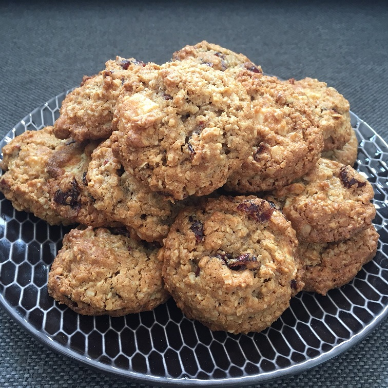

Easy Oatmeal Muffins

Description
A simple but delicious recipe for oatmeal muffins.
Ingredients
- 1 cup milk
- 1 cup quick cooking oats
- 1 egg
- quarter cup vegetable oil
- 1 cup flour
- quarter cup white sugar
- 2 tsp baking powder
- 1/2 tsp salt
Steps
-
Preheat oven to 425 degrees F (220 degrees C). Grease muffin cups or line with paper muffin liners.
- In a small bowl, combine milk and oats; let soak for 15 minutes.
- In a separate bowl, beat together egg and oil; stir in oatmeal mixture. In a third bowl, sift together flour, sugar, baking powder and salt. Stir flour mixture into wet ingredients, just until combined. Spoon batter into prepared muffin cups until cups are 2/3 full.
- Bake in preheated oven for 20 to 25 minutes, until a toothpick inserted into the center of a muffin comes out clean.